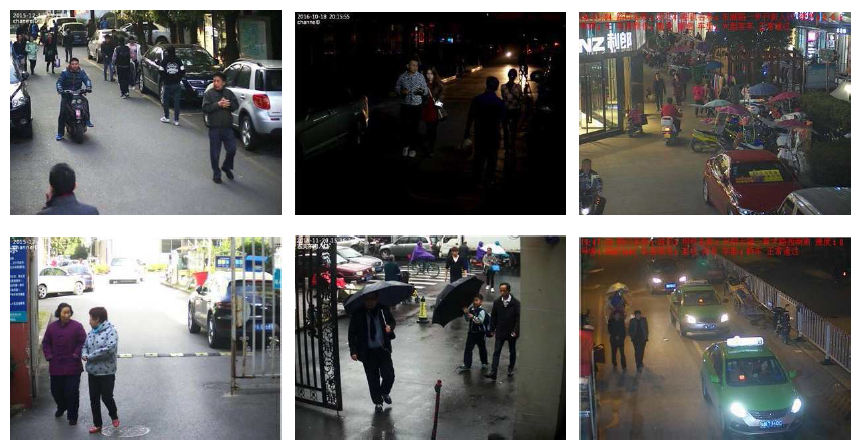
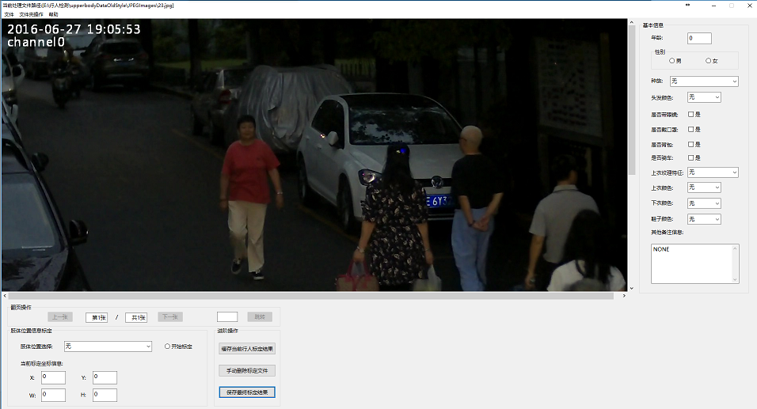

Lin Zhang, Yamei Zhu, Ying Shen, and Dongqing Wang
School of Software Engineering, Tongji University, Shanghai, China
This is the website for our paper "A comprehensive study on upper-body detection with deep learning methods", submitted to ICPR 2018.
We have established a large-scale benchmark dataset for upper-body detection.
Upper-body Image Set(JPEGImages) Unzip RAR files, "JPEGImages.rar". there are 9585 images extracted from typical surveillance video clips.
Annotations (Annotations.rar) Unzip RAR files, "Annotations.rar". This folder have ever corrispond annotations to the upper-body image set. The upper-body regions were cropped very carefully for each image.
We have also developed a C++ labeling tool (AnnotationsTool.rar) for labeling upper-body regions on surround-view images, whose interface is shown in the image below.
